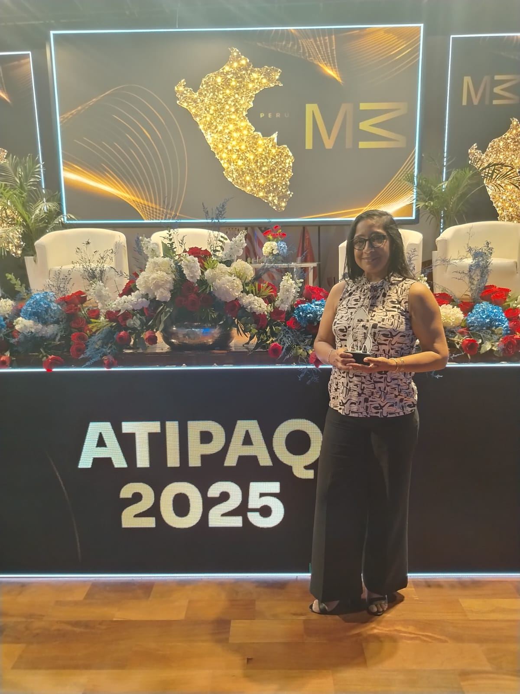

Concurso Nacional de Emprendimiento
Ganadora — ATIPAQ 2025
Reconocimiento nacional otorgado en la ceremonia ATIPAQ 2025 (Misión 3), organizada por la Universidad César Vallejo, a la trayectoria y propuesta de LUMA.